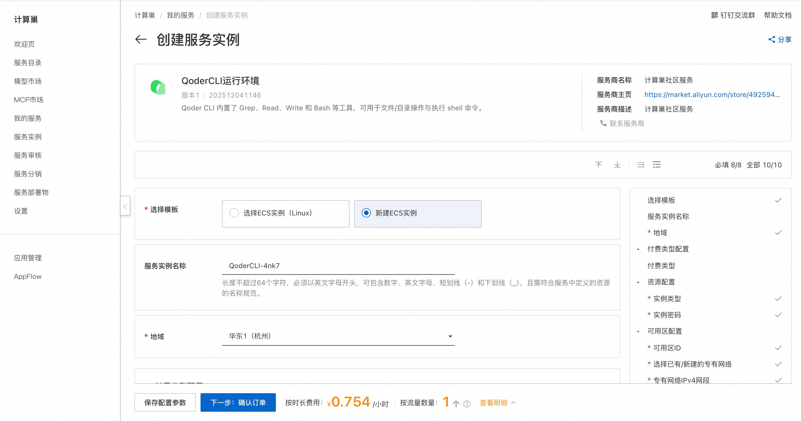
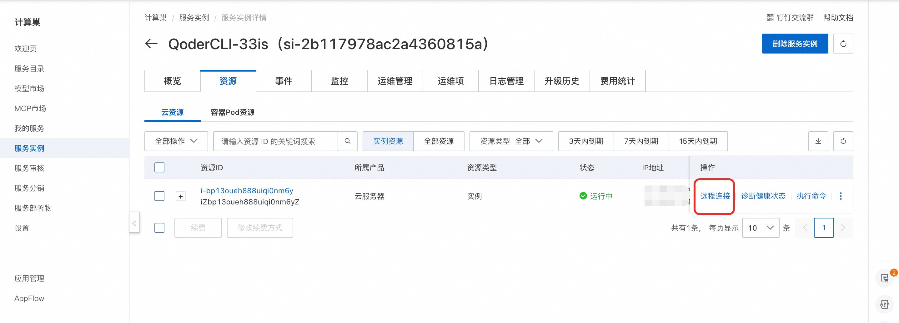
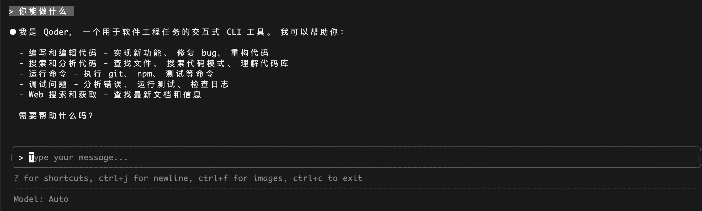
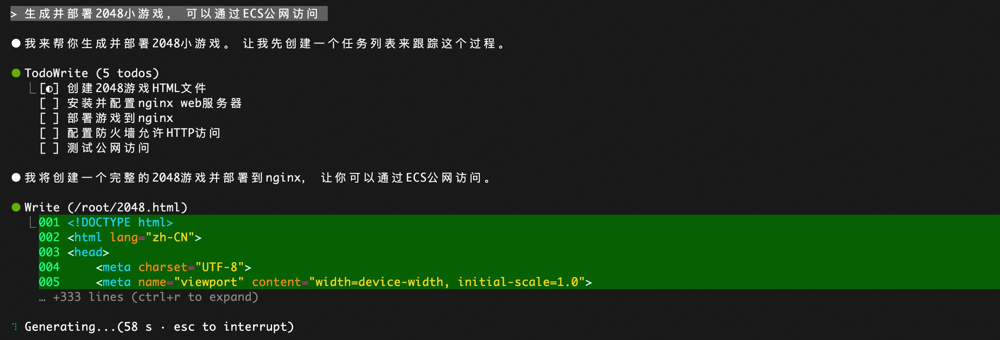

🌟 服务简介
💥 告别重复编码，让 AI 成为你的超级副驾！
QoderCLI 不只是工具——它是你 24 小时在线的智能编程伙伴，秒级理解项目上下文，一行指令生成完整功能模块，测试、解释、补全一气呵成。开发效率飙升 300%，代码质量肉眼可见提升！
QoderCLI 是一个开源的代码智能分析与生成工具，专为开发者打造。通过集成大语言模型（LLM），QoderCLI 能够理解项目上下文、自动补全代码、生成单元测试、解释复杂逻辑，并支持多语言智能问答，显著提升开发效率与代码质量。
🚀 部署流程
⚡ 5 分钟极速上线，无需配置，开箱即用！
借助阿里云计算巢，一键部署 QoderCLI 社区版，省去环境搭建烦恼，专注核心开发！
-
访问计算巢 QoderCLI 社区版 部署链接 ，按页面提示填写部署参数：
 -
参数配置完成后，系统将自动生成费用预估明细。确认资源配置无误后，点击 下一步：确认订单。
-
在订单确认页，确认后点击 立即创建 开始部署。
-
部署完成后，通过控制台远程连接ECS。 
💡使用示例
🧠 像和资深工程师对话一样写代码——自然、精准、高效！
-
通过 TUI 登录 Qoder，在终端中启动 Qoder CLI
bash sudo su cd /root qodercli -
在交互式提示符中，输入 /login
bash
/login
- 选择 login with browser：

- 复制完整链接在浏览器打开并批准登录：

- 登录成功后，开始对话，Qoder CLI 将自动生成代码、生成单元测试、解释复杂逻辑，并支持多语言智能问答。

- 使用 Qoder CLI 生成并部署2048小游戏，如下图所示，CLI会自动创建相关文件并运行服务。

- 等待服务部署完成：

- 复制链接通过浏览器访问服务：

✨ 从想法到可运行服务，只需一句话——这就是智能编程的未来！
📚 使用指南
使用请参考 Qoder CLI 官方文档 了解完整命令列表。
© 2009-2022 Aliyun.com 版权所有